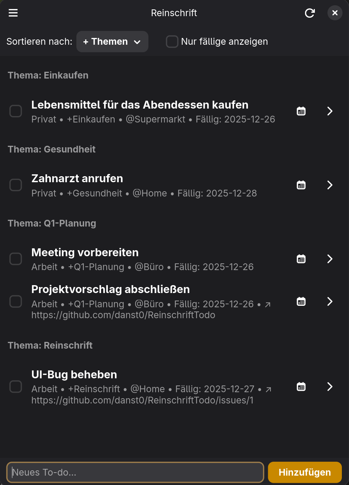

Freie Software · GNOME · Klartext zuerst
Deine Todo-Liste ist nur eine Textdatei.
Reinschrift ist eine native GNOME-App, ein CLI und eine selbst hostbare Web-App — alle lesen und schreiben eine Markdown-Datei. Versionierbar mit Git, synchronisiert über Nextcloud, in jedem Editor zu öffnen. Keine Datenbank. Kein Silo. Kein Lock-in.
- [x] Pass verlängern ✅ 2026-06-01 - [ ] Fahrradlicht reparieren +werkstatt @zuhause - [ ] Hafermilch kaufen +einkauf @laden due:2026-06-12
01 Das Format
Eine Zeile pro Aufgabe. Lesbar für dich, parsebar für Maschinen.
Inspiriert von todo.txt, aber zuhause in gewöhnlichen Markdown-Checklisten — die jeder Editor, jede Forge und jede Notiz-App ohnehin rendert.
+projektProjekt, Anführungszeichen erlaubt@kontextKontext oder Ortdue:…Fälligkeit, optional mit Uhrzeitrec:weeklyWiederholung beim Abschließen~note:"…"Freitext-Notiz^ID123stabile Referenz-ID02 Drei Apps, eine Datei
Desktop, Terminal und Browser — such dir deine Oberfläche aus.

a.GNOME-Desktop
Natives GTK4/libadwaita. „Mein Tag"-Planung, Suche, Mehrfachauswahl, Spracheingabe über lokales Whisper — und Live-Reload, wenn sich die Datei darunter ändert.
b.CLI
Für Terminal-Workflows und Skripte — mit JSON-Ausgabe.
c.Web-App · PWA
Selbst gehostete Flask-App mit Wischgesten, Pull-to-Refresh und OIDC-Login. Auf dem Handy als PWA installierbar — deine Aufgaben überall, weiterhin eine Datei.
03 Alltagsfunktionen
Klartext darunter. Komfort darüber.
WebDAV-/Nextcloud-Sync
Alle Apps zeigen auf dieselbe Datei — lokal oder in deiner Cloud. Externe Änderungen werden live übernommen.
Mein Tag
Eine tägliche Planungsansicht: Wähle aus, worum es heute wirklich geht.
Wiederkehrende Aufgaben
rec:daily, rec:weekly, rec:monthly — erledigte Aufgaben legen sich selbst neu an.
Suchen, filtern, sortieren
Nach Projekt, Kontext oder Fälligkeit — einheitlich in allen drei Apps.
Spracheingabe
Lokale Transkription per Whisper auf dem Desktop, Web Speech API im Browser.
KI-Unterstützung
Aufgaben in natürlicher Sprache erfassen und Duplikate semantisch erkennen — über dein eigenes Ollama, nichts verlässt deinen Rechner.
Sechs Sprachen
Deutsch, Englisch, Spanisch, Französisch, Japanisch, Schwedisch.
Freie Software
GPL-3.0-or-later. Ein Repo: Rust-Core, GTK-App, CLI und Flask-Web-App.
04 Installieren
Nimm die Desktop-App, das CLI — oder hoste selbst.
GNOME-Desktop
Der empfohlene Weg auf jeder Linux-Distribution.
Arch Linux
GUI und CLI aus dem AUR, gebaut aus dem Release-Tag.
aur.archlinux.org/packages/reinschriftWeb-App selbst hosten
Fertiges Image auf GHCR, veröffentlicht bei jedem Release. OIDC, WebDAV und Zugangsdaten per Umgebungsvariablen.
docker-compose-Beispiel auf GitHub